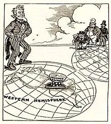

收录于合集

作品简介
【作者】 格雷厄姆·艾利森(Graham T. Allison)是哈佛大学肯尼迪政府学院首任院长，他曾任哈佛大学贝尔弗中心主任，在克林顿政府出任助理国防部长。他曾在去年出版的《注定一战：中美能避免修昔底德陷阱吗？》一书中深度剖析“修昔底德陷阱”理论，他在书中详述过去500年间发生在守成大国与崛起大国间的权力更迭，列举的16个案例中共有12个引发战争，仅4次幸免。不过，对于未来中美是否能避免一战，艾利森态度谨慎，并未在书中作出预判。
【编译】 夏博阳（国政学人编译员，华侨大学新闻传播学院）
【校对】 张曼娜
【审核】 施榕
【排版】 贺奕
【来源】 Graham T. Allison, “The New Spheres of Influence: Sharing the Globe with Other Great Powers,” Foreign Affairs , Vol. 22, No. 2, 2020, pp. 41-48.
注：西南财经大学经济学院的葛泽坤同学亦对此文的编译有所贡献，特此感谢。
期刊介绍
《外交事务》（Foreign Affairs），创刊于1922年，是美国外交关系委员会发布的国际关系和美国外交政策的美国杂志，被誉为“美国最具影响力的外交政策杂志”之一。根据2018年的期刊引文报告（Web of Science）, 该期刊的影响因子为4.390，在“国际关系”类别的91种期刊中排名第3。
新势力范围——与其他大国共享全球
The New Spheres of Influence: Sharing the Globe with Other Great Powers
格雷厄姆·艾利森
内容提要
冷战烽烟停息后，美国政策制定者们宣称，地缘政治的一个基本概念业已过时。前国务卿赖斯描述了一个崭新的世界，“大国不是由势力范围……或强者将自己的意志强加于弱者来定义的”。前国务卿希拉里·克林顿宣告：“美国不承认势力范围”。前国务卿约翰·克里宣布：“门罗主义时代结束了”，结束了美国近两个世纪以来对西半球势力范围所有权的宣称。
这种论调是正确的，因为地缘政治的某些方面已经发生变化。然而这种论调失算于美国的决策者们已经不再认可势力范围（即其他大国要求其所在地区的其他国家服从或在当地施加主导控制的能力）的缘由。不是因为地缘政治概念过时了，恰恰相反，多个势力范围已经被美国单独的势力范围所取代，“普天之下，莫非王土；率土之滨，莫非王臣”。强者仍然把他们的意志强加于弱者,世界其他地区被迫在很大程度上遵循美国的规则，否则将面临着从严重的制裁到彻底的政权更迭的巨大代价。势力范围并没有消失；由于美国霸权主义的压倒性事实，它们已融为一体。
但此时此刻，霸权正在衰退，华盛顿已经意识到所谓“大国竞争的新时代”的到来，中国和俄罗斯越来越多地利用自己的力量维护利益和价值观，而这些利益和价值观往往与美国的利益和价值观相冲突。但是，美国决策者和分析人士仍在努力理解，新时代对美国的全球角色来说意味着什么？
展望未来，美国的画风不仅会风格迥异，戏份也会大减。尽管领导人仍在宣布雄心壮志，但手段的减少意味着意义的消逝。单极主义已成明日黄花，其他国家取代美国荣登主导国际秩序宝座的幻想也已随风而逝。美国需要接受一个现实——天下存在“王土”，却并非都是“一王之土”。

文章导读
一、回归的世界
在宣布新的地缘政治规则之前，冷战后的美国国务卿应该回顾第二次世界大战的最后几个月。当时，美国决策者同样难以接受一个以势力范围主导地缘政治的新世界。有关该问题的观点是美国政府两位苏联高级专家之间辩论的核心议题。
1945年2月4日，时任美国总统富兰克林·罗斯福在雅尔塔会见了时任苏联领导人约瑟夫·斯大林和英国首相温斯顿·丘吉尔。站在罗斯福一边的是他的翻译兼苏联问题首席顾问查尔斯·博伦。就在那天早上，博伦打开了一封来自他在莫斯科的亲密同事乔治·凯南的紧急私人信件。凯南正确地预测到，苏联将试图尽可能多地维持对欧洲的控制，问题是美国应该怎么做。乔治·凯南问道:“为什么我们不能对它做出一个体面的明确妥协——坦率地把欧洲划分成势力范围——让我们自己置身于俄罗斯的势力范围之外，让俄罗斯人置身于我们的势力范围之外?”
博伦异常震惊，“完全不可能”，他脱口而出。“这种外交政策不可能由一个民主国家制定”。后来回想这一时刻，博伦解释道:“美国人民打了一场漫长而艰苦的战争，他们值得我们至少尝试去创造一个更美好的世界”。1945年至1947年期间，博伦与罗斯福政府和杜鲁门政府的其他领导人一起努力，实现了他们的“同一个世界”愿景。在这个愿景中，曾一起击败纳粹的盟国将继续结盟，创建一个新的全球秩序。但他最终还是接受了现实世界——简而言之，凯南是对的。“二战后，在世界重建的主要问题上，大国之间在政治经济领域并未团结一致，苏联及其卫星国与世界其他国家南辕北辙”。博伦承认在1947年的夏天在一份备忘录对国务卿马歇尔说道，“简而言之，二分天下，而非一统山河”。
博伦并未因同意凯南的论断而丧失斗志。他在给马歇尔的备忘录中总结道：
面对这一难以置信的事实，无论我们如何惋惜，美国为了自身的福祉和安全，也为了自由的非苏联世界的福祉和安全，必须……把(非苏联世界)在政治上、经济上、财政上，以及军事上拉得更近些，以便能够有效地对付坚如磐石的苏联地区。
这种信念成为未来几十年美国的战略支柱，它建立在对势力范围的赞同基础上。如果某些地区遭受苏联的统治，往往带来可怕的后果。但是对美国来说，最好的办法是支持苏联势力范围周边的势力，同时加强自己势力范围内的力量和团结。
在随后的四十年中，美国和苏联上演了大国竞争，世人称之为冷战。在苏联的势力范围内，东欧被征服的国家仍然处于一个“邪恶帝国”的统治之下。美国的总统们多次面临抉择的危急时刻——是向被苏联主导的国家发兵支持自由斗士？还是对自由斗士被血腥屠戮袖手旁观？无一例外,美国总统们选择袖手旁观而非施加干涉:想想吧，1956年匈牙利十月事件时的艾森豪威尔，还有1968年布拉格之春时的约翰逊(以及在冷战之后,俄罗斯出兵格鲁吉亚时的布什，还有俄罗斯占领克里米亚时的奥巴马。）缘何至此？每个人都接受了一个不可接受但又不可否认的事实:正如时任美国总统里根曾在与前苏联领导人戈尔巴乔夫的联合声明中所解释的那样，“核战争不可能打赢，也绝不能打。”
冷战历史给我们以警醒：一个同时具有理想主义和现实主义的国家，总是要努力调和理论与目标的理性化以及权力现实之间的矛盾。外交政策分析家扎卡里亚在总结中称，其结果是“表面改革，实际妥协”。即使在美国权力鼎盛之时，妥协也意味着接受苏联势力范围内的丑陋事实。
二、结构性转变
经过近半个世纪的竞争，冷战结束，苏联消失。1991年，美国在经济、军事和地缘政治上处于主导地位。在冷战后的头二十年里，美国的国防开支超过了紧随其后的十个国家的国防预算总和(其中五个是美国的条约盟友)。就作战而言，这意味着，正如前国防部长詹姆斯·马蒂斯在2018年的《国防战略报告》中所说，美国“在每一个作战领域都享有无可匹敌的或占主导地位的优势。我们通常可以在我们需要的时候部署我们的部队，在我们需要的地方集结我们的部队，并按照我们需要的方式行动。”美国及其盟友可以欢迎新成员加入北约，对他们适用其公约第五条所规定的集体防御，而不考虑风险，因为该联盟没有面临真正的威胁。在那个世界里，战略的实质是资源方面的巨大挑战。
往事如砂，侵于长风。在21世纪的头20年里发生的权力平衡的结构性转变，与美国在其244年历史中的同等时期所见证的每个转变一样引人注目。套用捷克斯洛伐克前总统哈维尔的话来说，这一切发生得太快了，我们甚至还来不及惊讶。美国在全球GDP中所占的份额从1991年的四分之一下降到今天的七分之一，而在1950年几乎是二分之一。(虽然GDP不是一切，但它确实构成了国与国之间关系的基础结构。)随着美国的相对实力下降，可供政策制定者选择的可行方案也越来越少，以美国对中国“一带一路”倡议的回应为例。中国拥有近3万亿美元的外汇储备，可以在基础设施方面投资1.3万亿美元，将欧亚大陆的大部分地区与以中国为中心的秩序连接起来。国务卿迈克·蓬佩奥宣布，作为回应，美国将增加自己在印度- 太平洋地区的投资，但他只拿出了1.13亿美元的新投资。
当然，中国始终是体系结构转变的主要受益者。中国的GDP在上一代飙升：中国的GDP从1991年占美国的20%增长到今天的120%（以购买力平价衡量，CIA和国际货币基金组织都使用该指标来比较各国经济）。尽管中国面临着许多内部挑战，但有更多的理由期望这种基本的经济趋势继续发展，而不是押注它崩溃。中国的公民数量是美国的四倍，如果中国工人的生产效率达到今天葡萄牙工人的水平(大约是美国工人的一半)，中国的GDP将增长到美国的两倍。
在亚洲，经济实力的天平尤其向有利于中国的方向倾斜。作为世界上最大的出口国和第二大进口国，中国是包括美国盟友在内的所有其他东亚主要国家的最大贸易伙伴。在全球范围内，中国在先进技术方面也正在迅速成为美国的竞争对手。如今，在20家最大的信息技术公司中，有9家是中国公司。四年前，当全球最重要的先进技术人工智能(AI)领域的领导者谷歌评估其竞争时，中国企业与欧洲企业并列。如今，这种论调已经过时:中国企业在许多应用人工智能领域处于领先地位，包括监控、面部和语音识别，以及金融技术。
中国的军费开支和军事能力也大幅增长。25年前，它的国防预算是美国的二十五分之一;现在这一比例已经升到三分之一，正在不断接近，几乎快要相等。美国的国防预算覆盖全球，大头在欧洲和中东，而中国的预算则集中在东亚。在缺乏实战的情况下，对相关军事能力的最佳测试是战争演习。2019年，前美国国防部副部长罗伯特·沃克和国防部主要国防规划者之一戴维·奥奇马涅克公开总结了最近一系列机密军事演习的结果。用奥奇马涅克的话概括来说就是:“当我们与俄罗斯和中国作战时，会被打得屁滚尿流。”正如《纽约时报》所总结的那样，“之前五角大楼在台湾海峡与中国对峙的军演中，比了18次，输了18次。”
俄罗斯则有所不同。无论普京如何打算，俄罗斯永远不会再是他父辈时期的苏联。苏联解体后，俄罗斯的国内生产总值(GDP)和人口只剩下不到之前的一半，其疆界也倒退到了叶卡捷琳娜二世之前。然而，俄罗斯仍是核大国，拥有与美国匹敌的核武库;其国防工业能生产世界亟需的武器(就像印度和土耳其在过去一年所展示的那样);它还自傲于拥有战无不胜的军事力量——正如他们在车臣、格鲁吉亚、乌克兰和叙利亚反复展示的那样。在一个其他大多数国家认为战争已经过时，保持军事力量更多是为了仪式而不是战斗行动的大陆上，军事实力现在可能是俄罗斯的主要比较优势。
三、返璞而归真
所谓势力范围已被扔进历史垃圾箱的说法，是基于这样一种假设:其他国家只会占据美国在其主导秩序内指定给它们的位置。这种假设已经不仅仅是幼稚了。然而，由于许多美国分析人士和政策制定者仍然坚持对中俄形象抱残守缺，他们对美国令行禁止的看法继续反映了一个已经消逝的世界。
在几个世纪的地缘政治竞争过程中，政策制定者和理论家发展出了一套核心概念，以帮助阐明国家之间关系的复杂性，包括势力范围、均势和联盟。这些概念必须根据新世纪的情况调整内涵。但它们仍然是理解和建立国际秩序的最坚实的基础。
当两个国家间的权力平衡转变为一个国家主导时，由此产生的新均势便投下一片阴影，也就是“势力范围”。这个特定的术语在19世纪早期进入了外交词汇的范围，但是这个概念和国际关系本身一样古老。(正如修昔底德所指出的，公元前五世纪波斯战败后，斯巴达要求雅典不要重建其城邦周围的城墙，以使雅典变得脆弱。)传统上，大国要求其边界和邻近海域的较小国家在一定程度上的顺从，它们期望其他大国尊重这一事实。
势力范围也超出了地理范围。当美国引领世界创造互联网及其硬件和软件时，美国享受到了国家安全局前局长迈克尔·海登后来所说的“电子监控的黄金时代”。由于大多数国家之前不了解斯诺登透露的监视能力，使得美国在监听、跟踪甚至对此进行干扰的科技能力上无与伦比。但斯诺登事件之后，许多国家反抗美国封锁华为5G基础设施的举动。正如一个目前正在考虑其选择的国家领导人最近所说，华盛顿正试图说服其他国家不买中国的硬件,因为这将有利于中国从事间谍活动,而希望其他国家购买美国硬件,这将使美国更容易刺探消息。
四、现实的估算
从美国的利益和价值观来看，中国和俄罗斯实力的增长不利于美国。作为大国，它们可以利用权力阻止乌克兰加入北约。南海很可能变得更像加勒比海，而不是地中海——中国的东南亚邻国将会像拉美国家。乌克兰将不得不从失去克里米亚的阴影中走出来，因为俄罗斯的“近邻”国家将学会对克里姆林宫更加敬畏。
许多其他国家和个人在美国安全伞下找到了庇护所，并从美国领导的以维护自由为核心特征的国际秩序的构想中获得了灵感，这将带来苦果。叙利亚最近发生的事件预告了即将发生的事情。阿拉伯之春在2010年底和2011年爆发后，奥巴马宣称叙利亚领导人阿萨德“必须离开”。但是普京不以为然并付诸行动。他将一个奥巴马视为“地区大国”的国家调动起来，使其可以利用其军事力量来反抗美国。同时，普京帮助叙利亚领导者巩固政权。
这是叙利亚的噩梦，数百万人流离失所，并对邻国和欧洲产生了巨大影响。但奥巴马，或者后来的特朗普可能认为，数百万人流离失所并对欧洲造成影响的代价过高，所以奥巴马和特朗普认为，派遣军队会更好。在一个普京和阿萨德笑问客人孰起孰落的世界中，美国人能睡个好觉吗?美国的不作为不言自明。令人遗憾的是，美国人至少在可预见的未来中吞下苦果。
当然，承认其他大国具有势力范围并不意味着美国无能为力，而是最近过度军事化的美国外交政策限制使用军事力量的反映，这种限制常常等同于默许。华盛顿还有其他方式来影响其他国家对成本和收益的计算:通过谴责不可接受的行动;否认合法地位;对国家、公司和个人实施经济制裁;支持当地的抵抗者。但当另一个大国认为核心利益受到威胁时，这类工具很少能决定性地改变它所做的决定。需要铭记的是，美国拒绝承认和接受在其他大国阴影下的现实常常导致自身的重大政策失败。从麦克阿瑟将军在朝鲜战争中向中国边境急行军，到布什坚持要求北约为格鲁吉亚和乌克兰提供成员资格，冥顽不灵地罔顾现实只会适得其反。
五、历史的橱窗
在力所能及的范围内，华盛顿应首先将重点放在其联盟和伙伴关系上。如果中国注定要成为新加坡前领导人李光耀口中的“世界历史上的头号玩家”，美国就必须努力召集盟友，共同形成与中国的力量对比。
这种逻辑在经济领域最为明显。在特朗普终止TPP（“跨太平洋伙伴关系协定”）之前，该协定承诺召集占全球GDP 40%的国家，制定一套统一的规则，从关税到国有企业，再到劳工和环境标准，从而对中国经济进行制衡，使北京成为规则的接受者而不是制定者。由于日本首相安倍晋三的努力，TPP如今已成为现实——但没有美国的参与。如果美国的政策制定者能够找到一种方法，让战略利益凌驾于政治之上，美国可能会重新加入TPP。如果新的TPP与奥巴马政府末期和欧盟正在谈判的平行贸易协定相结合，世界GDP的近70％可能来自这一平衡协定，而中国只占据了约20％。
在军事领域，同样的逻辑也适用，但更加复杂。华盛顿需要合作伙伴，但合作伙伴带来的收益要大于风险。不幸的是，美国当下的盟友很少能符合这一标准。美国的同盟体系应该接受重新评估:从巴基斯坦、菲律宾、泰国到拉脱维亚、沙特阿拉伯和土耳其，每一个当前的盟友和伙伴都应该被衡量其正在采取哪些行动提升美国的安全与福祉，以及需要承担哪些风险和成本。铁打的联盟并不存在。从历史上看，当情况发生变化时，特别是当一个主要的敌人消失或均势发生巨大变化时，国家之间的其他关系也会发生变化。今天大多数美国人已经忘记了一个时代，在那个时代，北约在亚洲有一个对应的组织——东南亚条约组织(SEATO)，甚至在中东也有一个类似的组织——中央条约组织（CENTO）;这两个组织现在都是国家利益博物馆里的老古董。正如乔治·凯南所言:“我们需要赢得更多的尊重……坚决而勇敢地清算不可靠的立场，而不是固执地追求不切实际或毫无希望的目标。”
为了解继承当前美国同盟带来的风险，需要考虑美国国防规划人员当前忧心忡忡的两种情况。其一是在欧洲方面，如果为了应对里加造船厂的俄罗斯民族工人起义，拉脱维亚政府镇压了俄罗斯民族，进而引发了俄罗斯对拉脱维亚的吞并——克里米亚的2.0版本，北约是否会根据其第五条约，对此立刻采取军事回应？它应该这么做吗？倘若对这些问题都难以回答，那么就该是针对联盟启用类似于2008年金融危机后对银行进行压力测试的时候了。
考虑到新世界中核武器的实际情况，这种方法显得尤为重要。中俄能够抵御最初的核攻击并进行可能摧毁美国的报复性打击的能力。因此，不仅核战争不可行；即使是可能升级为核战争的常规战争也有可能造成灾难。所以，必须通过谨慎、约束和细致的风险计算来缓和竞争。对于一个已经积累了一长串与其他国家或实际上或想象中的纠葛的国家来说，一张来自华盛顿的空头支票会产生大问题。
如果在针对波罗的海地区的常规战争中，军事力量的平衡已经决定性地向有利于俄罗斯的方向转移，那么美国的承诺将难以为继。承诺效力与美军实力的差距是一个过度扩张的典型案例。经过分析，对当前的同盟体系以及美国与50多个条约盟国和伙伴的关系进行重新评估的意义，应该会浮出水面。但这会导致美国摆脱一些盟友，并对其他那些国家利益对美国安全十分重要（反之亦然）的国家双倍施压，从根本上修改承诺条款，突出义务与限制，使之与承诺和保证一样显著。
这一过程还将提高美国选择重申的承诺的可信度。尽管冷战老兵坚定地宣称北约是世界历史上最伟大的联盟，但特朗普与奥巴马都不以为然。显然，美国军方怀疑北约是否会对俄吞并克里米亚有所反应，也怀疑美国政府是否能够在事情结束前就如何回应做出决定。反思美国对其盟国的承诺，将有助于提升美国国家安全并且使这些相同的协定更加有力。
六、投身于重建
战略是目的和手段的有机结合。在一项战略失败的众多方式中，最常见的两种是错配与失明。错配是指行动者能够组织和维持的手段不足以实现既定目标，失明是指行动者被一个理想但无法实现的目标所迷惑。美国21世纪在中东的战争为这两者提供了生动的例子。
展望未来，美国决策者将不得不放弃他们对于理想世界的美好愿望，而去接受这样的事实——势力范围将仍然是地缘政治的中心特征。这种接受将不可避免地是一个漫长、令人困惑且痛苦的过程。然而，这也可能带来一股战略创新浪潮——这是对一系列美国国家安全概念进行根本性反思的机会。
当今大多数外交政策制定者对美国在世界上的角色的基本看法是在美国在冷战胜利后的25年里留下的。那个世界早已消逝，造成的影响与美国人在20世纪40年代后期面对的影响一样深远。因此，要知道现在被人们尊为“智者”的人，曾经用多长时间来理解他们所面对的世界。从对冷战的早期预警——凯南的“长电报”到最终制定出全面战略的政策文件NSC-68，用了近五年的时间。因此，美国外交政策圈目前普遍存在的困惑不应成为惊慌失措的理由。如果冷战时期的伟大战略家们花了将近五年的时间来制定一套基本的方法，那么寄希望于此届可以做的更好，便有些过于傲慢了。
_ ** _ ** _ ** _ 本文由国政学人独家编译推荐，文章观点不代表本平台观点，转载请联系授权。**__